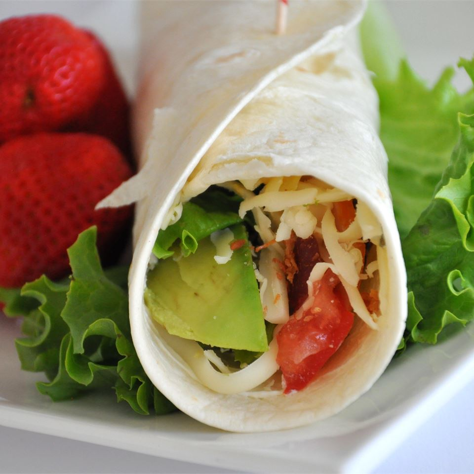

Turkey Wraps

These light and tasty wraps are great for lunch, or slice them smaller and they make wonderful party appetizers or great little after-school snacks.
Ingredients :
- 1 (8 ounce) package cream cheese with chives
- 2 tablespoons Dijon mustard
- 6 (8 inch) whole wheat tortillas
- 1 ½ cups finely shredded iceberg lettuce
- 12 slices thinly sliced deli turkey
- ¾ cup shredded Swiss cheese
- 1 large tomato, seeded and diced
- 1 large avocado, sliced
- 6 slices bacon, cooked and crumbled
Steps :
- Mix together the cream cheese and Dijon mustard until smooth. Spread each tortilla with about 2 tablespoons of the cream cheese mixture, spreading to within 1/4 inch of the edge of the tortillas.
- Arrange about 1/4 cup of shredded lettuce on each tortilla, and press the lettuce down into the cream cheese mixture. Place 2 turkey slices per tortilla over the lettuce, and sprinkle with 2 tablespoons of shredded Swiss cheese. Top each tortilla evenly with tomato, avocado slices, and crumbled bacon.
- Roll each tortilla up tightly, and cut in half across the middle with a slightly diagonal cut.